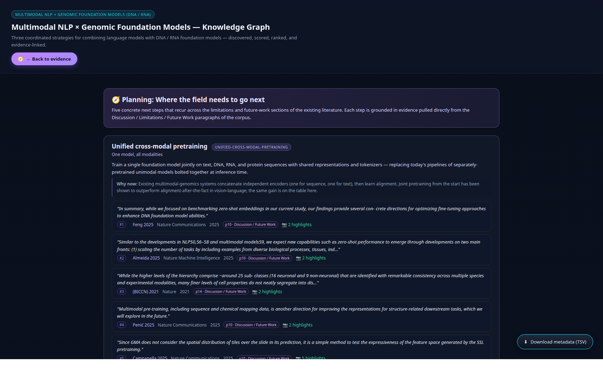

125Papers
9Claims
3Paradigms
76Evidence rows
1,262Paragraph PNGs
5Planning next-steps
40Future-work passages
2016–2026Year range
Combining natural-language models with DNA / RNA foundation models opens a design space where text grounds biological sequences with literature context, and sequences ground language models with measurable functional reality. Three coordinated strategies underpin progress: (i) strong unimodal genomic foundation models that scale long-context nucleotide sequence understanding, (ii) bridging text and sequence modalities through shared embeddings, instruction tuning, and text-conditioned generation, and (iii) deploying the resulting multimodal systems on variant-effect prediction, regulatory annotation, and sequence-aware drug discovery.
The three paradigms
Genomic Foundation Models gfm
Unimodal foundation models for nucleotide sequences — the building blocks of any text-genomic multimodal system.
- Tokenization — k-mer vs BPE vs single-nucleotide
- Long-context architecture — Mamba, Hyena, sliding-window attention
- Pretraining objective — MLM, autoregressive, span corruption
Text–Sequence Multimodal Integration multimodal
Bridging language models and genomic foundation models so each can ground the other.
- Shared embedding spaces — cross-modal retrieval
- Instruction tuning — LLMs that follow biological queries
- Text-conditioned sequence generation — natural-language interfaces to sequence design
Downstream Multimodal Applications applications
What multimodal text-genomic models actually deliver in practice.
- Variant-effect prediction — pathogenicity with literature priors
- Regulatory annotation — enhancers, promoters, splice sites
- Sequence-aware drug discovery — RNA therapeutics, target ID
🧭 Planning: Next steps planning
Five concrete research directions distilled from the Discussion / Future-Work sections of the corpus.
- Unified cross-modal pretraining
- Whole-genome multimodal context
- Causal mechanism extraction
- Clinical actionability loop
- Standardised multimodal benchmarks
How it was built — the agent pipeline
Each agent has one concern and writes to its own canonical file; coordination happens through versioned data files, not direct calls.
Architect → ontology.json
↓
Discoverer (D) → papers.json + candidates.json (OpenAlex / arXiv / bioRxiv)
↓
Scorers ×3 → scored_<paradigm>.json (parallel, one per paradigm)
↓
Reviewer (R) → evidence.json (primary / secondary tiers)
↓
┌───────────┬───────────┬───────────┐
▼ ▼ ▼ ▼
Fetcher (P) Ranker (K) Linker (H) Planning Linker
↓ ↓
sentence-level paragraph PNGs
↓
QC checker → qc_report.{json,md}
↓
Auditor → standalone graph.html
Reproducible — every agent's logic is also a CLI script under scripts/ with --dry-run, --force, --id flags. Re-running on the same inputs produces the same outputs.
Preview

📋 Evidence view — paradigm cards · expandable claims · ranked evidence with rubric pills

🧭 Planning view — five next-step cards · evidence pulled from Discussion / Future-Work
What's inside this folder
multimodal_genomics/
├── index.html ← you are here (project overview)
├── graph.html ← the interactive knowledge graph
├── README.md ← reproducibility instructions
├── assets/
│ ├── evidence/ 1,262 paragraph-screenshot PNGs
│ └── qa/ preview screenshots
├── metadata/
│ ├── ontology.json 9 claims + rubric + venue allowlist
│ ├── planning_ontology.json 5 next-step claims
│ ├── papers.json 125-paper registry (MMG-001..125)
│ ├── candidates.json all (paper, claim) discovery rows
│ ├── evidence.json 76 promoted evidence points
│ ├── planning_evidence.json 40 planning evidence points
│ ├── promotion_log.md audit trail
│ ├── rank_log.md per-claim ranked tables
│ └── qc_report.{json,md} QC verdicts
└── scripts/ topic-agnostic CLI for re-running the pipeline